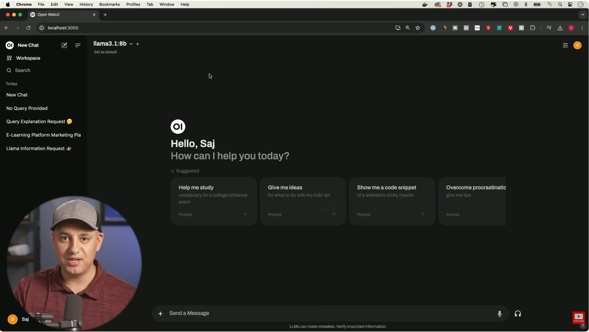
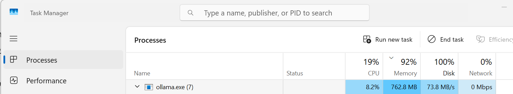

Ollama - inference locally on CPU (Llama, Qwen and more)
- Ollama Introduction and Installation Video
Link: Run New Llama 3.1 on Your Computer Privately in 10 minutes (Skill Leap AI)
Run inference from the terminal or from the Ollama chat.
Note - the new Ollama installation also installs Ollama Chat, so you don't need to install Docker and so - view the video upto 8:35 only,
(unless you want to upload files to the model). - Ollama Models

Go to Ollama.

Choose a Model and run.

To download another Model.

Here.

And here.

Copy.

Paste and run.
Note that in order to run it from the application you need to close and reopen it. - Ollama running

Note - if you try a model that is too big for your computer, like 40B in this example, this is what you get.
When I tried a 24B model on a CPU with 16G RAM I get a lot of Disk usage (I believe swap files):

You can remove models from the terminal by "ollama list" and then "ollama rm modelName".
Excel Ribbon
- Add Button to the Ribbon
- Save the Excel file as .xlsm (for now, can be changed to include other types)
-
Inside Excel Alt + F1, add:
Sub LaunchAIExcel()
RunPython "import AiExcel_main; AiExcel_main.main()"
End Sub
Actually this is just the simple version, that doesn't always work,
so copy into it the code from AIExcel_bridge.bas file,
for now, until installation is implemented. -
Right click on the Ribbon and "Customize the Ribbon...",
on the right "New Tab",
"Rename..." the "New Tab" and the "New Group",
on the left side change the drop down to "Macros",
choose LaunchAIExcel and "Add >>" it to your new group,
"Rename..." it and choose icon -
When you open an Excel file from D: (DevDrive) you will get a "Security Risk Microsoft has blocked macros..."
this happens only on D:.
Right click on the Ribbon and "Customize the Ribbon...",
Inside Excel File -> Options,
click "Trust Center",
click "Trust Center Settings...",
click "Trusted Locations",
click "Add new location...",
"Browse..." to D:\Dev\AiExcelProject,
check "Subfolders of this location are also trusted",
"OK".
- Connect RunPython to Excel
-
Open Terminal in D:\Dev\AiExcelProject,
go to green .venv, run:
.\.venv\Scripts\Activate.ps1
run : xlwings quickstart temp_fix --standalone
a folder "temp_fix" was created. -
Open the Excel file that is in new folder,
press Alt + F11
right click on Module -> xlwings
"Export File..." and "Save" -
Open AI_Generated_Table.xlsm
Alt + F11
right-click VBAProject (I_Generated_Table.xlsm),
"Import File..." and select xlwings.bas
delete temp_fix folder and xlwings.bas file.
-
Open Terminal in D:\Dev\AiExcelProject,